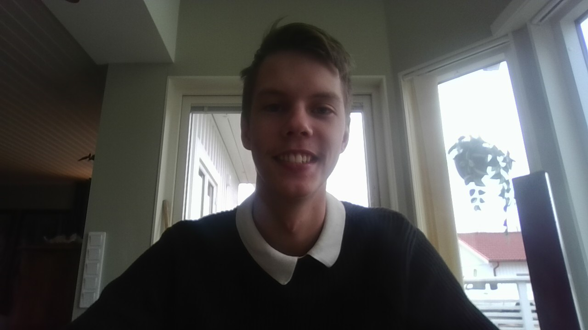

Jag går två sporter,
Golf och Teakwon-Do.
Golf har jag spelat i ca 3-4 år och Teakwon-Do har jag spelat i ca 8-10 år.
På min fritid gillar jag även att spela datorspel, umgås med vänner och familj.
det jag gör mest är att spela och då spelar jag mest sandbox open world maps.
Till exempel Baldur's Gate 3 eller typ No Man's Sky, som är dom mer populära spelen jag spelar.
När jag umgås med vänner brukar vi bara prata om skit saker och ha det kull.
Jag tränar golf och har en handikap på ca 40 och i teakwon-do har jag rött bälte.